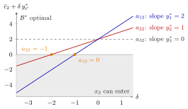

Changing a Technology Coefficient¶
Method¶
Input: a linear program in standard form subject to , , its final tableau for an optimal basis (the set of basic indices, with the nonbasic ones) with basis matrix , cost vector and dual solution , and a change of one entry of the constraint matrix (its entries are called technology coefficients), with , in the column of an original (non-slack) variable , all other data fixed.
Steps:
- Check whether is basic. If , the column is a column of , so and with it the whole tableau change; this case has no concise analysis, and the linear program is solved again. Continue only if .
- For nonbasic the matrix , the values and the value do not change, and . So remains feasible for every , with the same basic solution.
-
Only the reduced cost of changes. With the basis remains optimal if and only if
-
Solve for . Since at an optimal tableau: if , the condition is ; if , every keeps optimal.
- If the new reduced cost is negative, is an entering candidate; the tableau is still feasible, so the revised simplex algorithm can continue from it with the new column .
Interpretation¶
A technology coefficient says how much of resource one unit of activity uses. If the activity is not part of the optimal plan, a change of its recipe cannot make the plan infeasible: the coefficient multiplies . The only question is whether the activity becomes worth starting.

The figure shows Example 2 below. Changing the entry by turns the reduced cost into , a line whose slope is the shadow price of row . The blue line (, ) crosses at , the red line (, ) at , and the dashed line (, ) never does. No line falls to the right, so an increase is always safe; only a large enough decrease of a coefficient in a row with a positive shadow price pushes the reduced cost into the grey half, where becomes an entering candidate. The two crossings are the thresholds and .
The reduced cost answers this by pricing the activity at the shadow prices: is the value of the resources one unit uses minus the profit it earns. Using more of a scarce resource () makes the activity less attractive, so every increase of is safe and only a decrease can break optimality. A coefficient in a row with , a resource with spare capacity, does not matter at all (Example 2 below).
The restriction to nonbasic columns is essential. A basic column belongs to , so a change in it changes , the basic values and every reduced cost at once; Example 3 below shows that even the optimal solution moves. Note also that the feasible region does change for nonbasic columns; what stays feasible is the current basic solution.
The pricing view is the one used for the reduced cost of an unused product in OR Modelling, where the sign is reversed ( is reported). The same computation, with a whole new column instead of one changed entry, decides whether the current basis survives adding a variable.
Key Results¶
- A change of an entry of in the column of a basic variable affects the entire tableau and cannot be analysed concisely.
- For a nonbasic the right-hand side and the basic values are unchanged, so remains feasible for every (Example 1 below).
- remains optimal if and only if , where differs from only in entry .
- Equivalently with : every increase of keeps optimal, and if every change does.
Examples¶
1. A coefficient in a row with a positive shadow price. For subject to , , , , with slack variables , the optimal basis is with , , and . Change to . Since is nonbasic, remains feasible for every . The new reduced cost is , so remains optimal if and only if . At the point is a second optimal solution with value . At the second constraint no longer involves , the reduced cost is , and the optimum jumps to with .
2. A row with shadow price zero. For subject to , , , , with slack variables , the optimal basis is with , , and is nonbasic with . Changing by gives , so ; changing gives , so ; changing has no effect on optimality, since . For the reduced cost is , and the new optimum is with .
3. A basic column (boundary case). In subject to , , , , both original variables are basic at . Changing to changes a column of , so the method does not apply. Solving again gives with : here the same variables stay basic, but their values and the objective value change; a change in a nonbasic column never moves the basic solution of .
Prerequisites¶
- Basis and Basis Matrix
- Simplex Tableau in Matrix Form
- Dual Solution from the Simplex Tableau
- Objective Coefficient Ranging
Related Concepts¶
- Adding or Removing a Variable
- Right-Hand-Side Ranging
- Dual Linear Program
- Revised Simplex Algorithm
- Reduced Cost
- Shadow Price in Linear Programming
- Sensitivity Analysis
Sources¶
- Math VI: Convexity and Optimization · Week 7
- H. E. Nusse and M. Dienstknecht, Math VI: Convexity and Optimization, lecture notes 2026–2027, Section 7.3
Aliases: changing the technology matrix, technology coefficient sensitivity analysis, changing a constraint coefficient Keywords: a_{i',j'}'=a_{i',j'}+\delta, -c_{j'}+\boldsymbol{c}{\mathcal{B}}^{\top}\boldsymbol{B}^{-1}\boldsymbol{A}}'\geq0, \bar{c{j'}+\delta\,y^*\geq0, nonbasic column, pricing out at shadow prices Symbols: delta, element of, lambda, real numbers, sum
Last updated: 5 November 2026 12:47
Changing a Technology CoefficientAdding or Removing a VariableBasis and Basis MatrixSimplex Tableau in Matrix FormDual Solution from the Simplex TableauObjective Coefficient RangingRight-Hand-Side RangingDual Linear ProgramRevised Simplex AlgorithmReduced CostShadow Price in Linear ProgrammingSensitivity Analysis